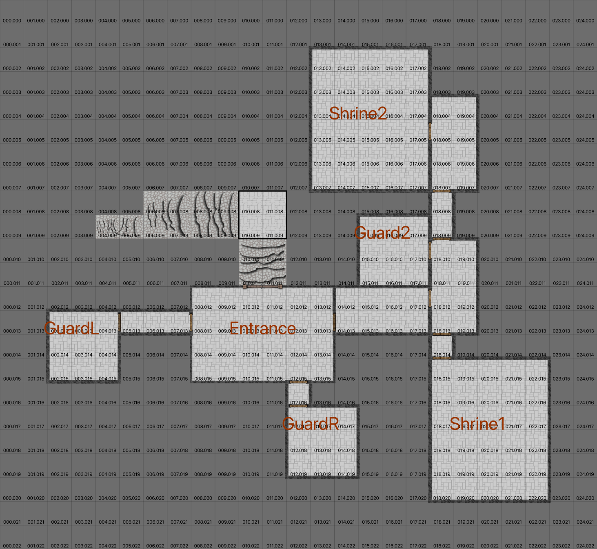

The Jackal’s Secret Cave¶
Concealed in a narrow canyon between two steep hillsides, there’s a hot spring. Locals who wander these forests know it steams in winter, and avoid it. Above this spring, high on the hillside, there’s a wall of ancient limestone with a low opening.
The location of the hot spring and cave are revealed only in notes found in the the Temple of the Cult of the Jackal. Look, specifically, in Central Tower.
Without the map, it is still possible to use divination to locate Xorn’s final hideout. The difficulty is Heroic, and a great deal of helpers and preparation is required.
General¶

The Secret Cave¶
Scale: Square = 2m (6’).
Characters¶
Goblins¶
Greater Goblin: Agility 3D+2, acrobatics +2, dodge +2, fighting +2, melee combat +2, stealth +2, Coordination 3D+2, marksmanship +2, throwing +1, Physique 3D+2, running +2, stamina +2, Intellect 3D, healing +2, scholar +2, traps +2, Acumen 3D, crafting +2, survival +2, Charisma 3D, command +2, intimidation 1D. Advantages: Equipment (R2), Weapon or survival gear unknown to humans, Disadvantages: Cultural Unfamiliarity (R2), Lost in human company, Special Abilities: Combat Sense (R2), Surprise reduced by 4, Move: 10, Strength Damage: 2D, Fate Points: 1, Character Points: 5, Body Points: 35, Equipment: bone and hide armor +1D; buckler +2; sword +1D+2, Description: Inhabitants of the realm of mountains and forests.
Goblin: Agility 3D, acrobatics +2, dodge +2, fighting +2, melee combat +2, stealth +2, Coordination 3D, marksmanship +2, throwing +1, Physique 3D, running +2, stamina +2, Intellect 3D, healing +2, scholar +2, traps +2, Acumen 3D, crafting +2, survival +2, Charisma 2D. Advantages: Equipment (R2), Weapon or survival gear unknown to humans, Disadvantages: Cultural Unfamiliarity (R2), Lost in human company, Special Abilities: Combat Sense (R2), Surprise reduced by 4, Move: 10, Strength Damage: 2D, Fate Points: 1, Character Points: 5, Body Points: 32, Equipment: bone and hide armor +1D; sword +1D, Description: Inhabitants of the realm of mountains and forests.
Troll: Agility 2D, dodge 2D, fighting 2D, melee combat 2D, Coordination 1D, Physique 4D+2, running +2, lifting 2D, Intellect 1D, Acumen 2D, search +2, tracking +2, Charisma 2D, intimidation +2, mettle +2. Advantages: Equipment (R2), Weapon or survival gear unknown to humans; Hardiness (R2), Really tough; Accelerated Healing (R2), Heals quickly, Disadvantages: Achilles’ Heel (R4), Fire does double damage, Move: 20, Strength Damage: 1D, Fate Points: 1, Character Points: 5, Body Points: 12, Natural Abilities: Natural Hand-to-Hand Weapon (Rteeth (damage +1D)), ; Natural Hand-to-Hand Weapon (Rclaws (damage +1D)), ; large size (scale modifier 2); Natural Armor (R2), -2 damage adjustment.
Xorn¶
Xorn is a beaten man, but will fight like hell anyway. He will summon as many Hordlings as he can.
Xorn: Agility 4D, fighting 1D+1, riding 2D, melee combat 1D, Coordination 4D, Physique 3D+2, stamina +2, Intellect 4D, cultures 1D, reading/writing 1D, scholar 1D, speaking 2D, Acumen 4D, disguise 1D, hide 2D, Charisma 3D+2, intimidation 4D+2, Extranormal 4D. Advantages: Authority (R3), Head of a cult; Wealth (R3), , Disadvantages: Infamy (R1), Reputation, Cruelty, known human sacrificer; Prejudice (R1), Ignorant: Common Situation, Strong Intensity, Lies about the Jackal cult constantly can’t admit he’s deeply into demonology. Doesn’t understand how the demons manipulate him.; Hindrance (R2), Incense addict: Must have incense burning at all times; Quirk (R2), Afraid of wands; Enemy (R3), Watched by demons who manipulate his dreams; Quirk (R2), Paranoia: People are out to get him. Mostly by concealing wands in unlikely places. Often, his prisoners must be dismembered to check for hidden wands., Special Abilities: Combat Sense (R2), , Move: 10, Strength Damage: 2D, Fate Points: 1, Character Points: 5, Body Points: 20, Equipment: A long-handled flail, carefully painted (2D+2), Description: Black robes with Jackal glyph.
Demon Fire¶
- Skill:
fire-based
- Difficulty:
8
- Effect:
12 (fire-based 2*D (ignore all armor))
- Range:
20 m (7)
- Speed:
(7)
- Duration:
1 sec (0)
- Casting Time:
1 round (4)
- Other Aspects:
incantation (4): Demon Fire (litany)
concentration (2): Concentration: 1 round (willpower/mettle roll 8)
Demon Shield¶
- Skill:
A wall of fire-like shimmer
- Difficulty:
14
- Effect:
9 (A wall of fire-like shimmer 2*D (protection modifier))
- Range:
8 m (5)
- Speed:
(5)
- Duration:
1 min (9)
- Casting Time:
1 round (4)
- Other Aspects:
area_effect (10): 2m radius sphere
incantation (4): Demon Shield Chant (litany)
concentration (2): Concentration: 1 round (willpower/mettle roll 8)
Demonic Cleansing¶
- Skill:
Boost Charisma/intimidation break concentration
- Difficulty:
14
- Effect:
12 (Boost Charisma/intimidation break concentration 4*D)
- Range:
8 m (5)
- Speed:
(5)
- Duration:
2 round (5)
- Casting Time:
1 round (4)
- Other Aspects:
area_effect (10): 2m radius sphere
incantation (4): Mage Intimidation Chant (litany)
concentration (2): Concentration: 2 round (willpower/mettle roll 8)
Demon Detection¶
- Skill:
- Difficulty:
20
- Effect:
27 (enhanced_sense (R3))
- Range:
20 m (7)
- Speed:
(7)
- Duration:
2 min (10)
- Casting Time:
2 round (5)
- Other Aspects:
incantation (4): Demon-detection (litany)
concentration (2): Concentration: 2 round (willpower/mettle roll 8)
Demon Wings¶
- Skill:
- Difficulty:
18
- Effect:
36 (flight (R2))
- Range:
1 m (0)
- Speed:
(0)
- Duration:
5 min (12)
- Casting Time:
3 round (6)
- Other Aspects:
incantation (4): Winds of Flight Chant (litany)
concentration (2): Concentration: 3 round (willpower/mettle roll 8)
Opening the Veil¶
- Skill:
Apportation
- Difficulty:
29
- Effect:
60 (Veil Opening: Apportation to new realm (R4); Adjustments for experience, knowledge, and aids)
- Range:
1 m (0)
- Speed:
(0)
- Duration:
5 min (12)
- Casting Time:
5 sec (4)
- Other Aspects:
incantation (4): Veil Opening Chant (litany)
concentration (2): Concentration: 5 sec (willpower/mettle roll 8)
components (4): proper resonating artifacts (rare)
Opens the veil; it can be held open for up to 5 min. to allow one Hordling pass through. Each minute has a 1/6 chance of one appearing: roll 5D, one for each minute of duration; at the first 1, a Hordling appears and the veil closes.
See Xorn additional notes.
The Salamander¶
The “Jackal God” that Xorn communes with is actually a demon from the universe of fire. A kind of fire elemental. Immensely powerful and dangerous.
Salamander: Agility 4D+1, fighting 1D+1, stealth 1D, melee combat 1D, Coordination 4D+1, Physique 4D+2, Intellect 3D+2, cultures 1D, navigation 1D, reading/writing 1D, scholar 1D, speaking 2D, Acumen 3D+2, artist 1D, crafting 1D, survival 1D, Charisma 3D+2, intimidation 1D+1, persuasion +2. Disadvantages: Achilles’ Heel (R3), Double damage from water-based attacks; Achilles’ Heel (R3), Requires heat source; Infamy (R2), Monsterous, Move: 10, Strength Damage: 2D, Fate Points: 1, Character Points: 5, Body Points: 40, Description: A big lizard, 10-14 ft. tall capable of walking upright and using weapons. Weapons are crystals that can withstand the heat of its lair., Natural Abilities: Natural Armor (R4), thick skin; Blur (R2), Flash to blind temporarily, improving attack and defense; Natural Ranged Weapon (R6D), fire breath; Size (R5), 800Kg mass, 8x typical human, scale 15; Hypermovement (R6), 12m Leap, 4x typical human.
Hordling: Agility 3D+2, fighting 1D, Coordination 3D+2, flight +2, Physique 4D, stamina 4D+1, Intellect 3D+1, Acumen 3D+1, Charisma 3D, intimidation 3D+1. Disadvantages: Achilles’ Heel (R2), silver or magic; Achilles’ Heel (R1), pentagrams; Quirk (R3), obeys true name; Quirk (R2), malicious; Quirk (R2), fears holy symbols; Quirk (R2), goes berserk when insulted; Infamy (R1), a demon; Achilles’ Heel (R2), holy ground, reduces PHY 1D each phase; Achilles’ Heel (R2), holy water, stun-only 1D each phase, Move: 10, Strength Damage: 2D, Fate Points: 1, Character Points: 5, Body Points: 18, Description: Dim-witted, pathetic creatures with wings and stingers in their tails., Natural Abilities: Natural Hand-to-Hand Weapon (R1D), Stinger on tail; Life Drain (R1), After attack +1D stun-only increase to body.
Rooms¶
Entrance.
GuardL.
The sunset horde. 12 goblins and 2 great goblins. The go out maurauding sunset to midnight and sleep during the day.
See Goblins.
GuardR.
The midnight horde. 12 goblins and 2 great goblins. The go out maurauding midnight to dawn and during the day.
See Goblins.
Guard2.
3 trolls. Trapped here controlled by the goblins. Not happy with anything.
Fight or Flight tends toward Flight.
Fight or Flight
Roll
Strategy
1-4
Flee
5-6
Fight
They tend to try and push through the doorway.
See Goblins.
Hall2.
Door between 17.12 and 18.12 is concealed. Requires careful search, difficulty of Difficult 16.
Shrine1.
Xorn. See Xorn.
Shrine2.
The Salamander. See The Salamander